Página Principal y Diseño de Interfaz
Interfaz web moderna y muy visual diseñada para captar la atención del usuario desde el primer segundo. Implementa SEO on-page y URLs amigables de manera nativa.
- Diseño 100% responsivo adaptable a dispositivos móviles y escritorio
- Estructura semántica HTML5
- Navegación fluida y jerarquía visual clara para destacar productos
- Paleta de colores y tipografía alineadas a la identidad de la empresa
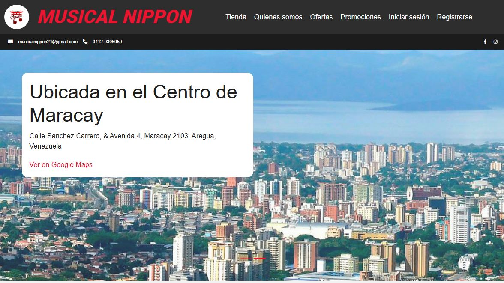
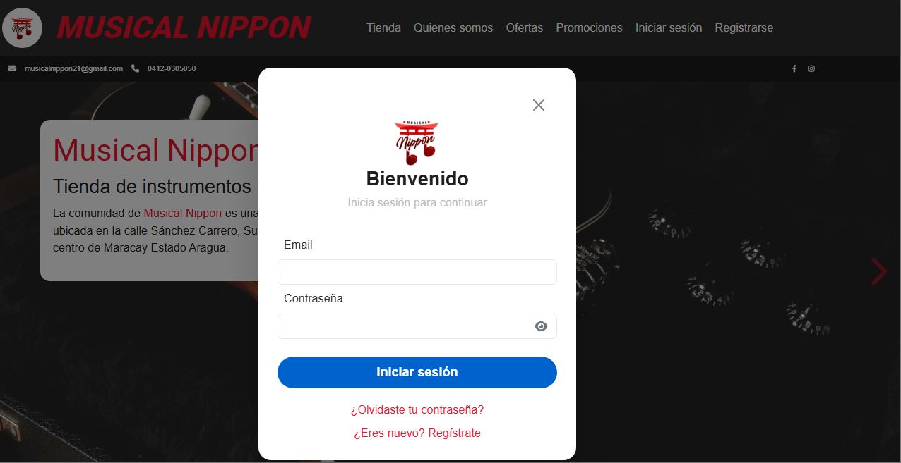
Catálogo y Posts Interactivos
Publicación dinámica de contenido creado directamente en el panel administrativo (ERP). Esta sección muestra tanto productos regulares como promociones y ofertas especiales, permitiendo una alta interacción con los clientes.
- Visualización de posts de promociones, ofertas y productos normales
- Sincronización en tiempo real con el inventario del sistema administrativo
- Sección interactiva donde los visitantes pueden hacer preguntas sobre los posts
- Diseño responsivo optimizado para una excelente experiencia de usuario
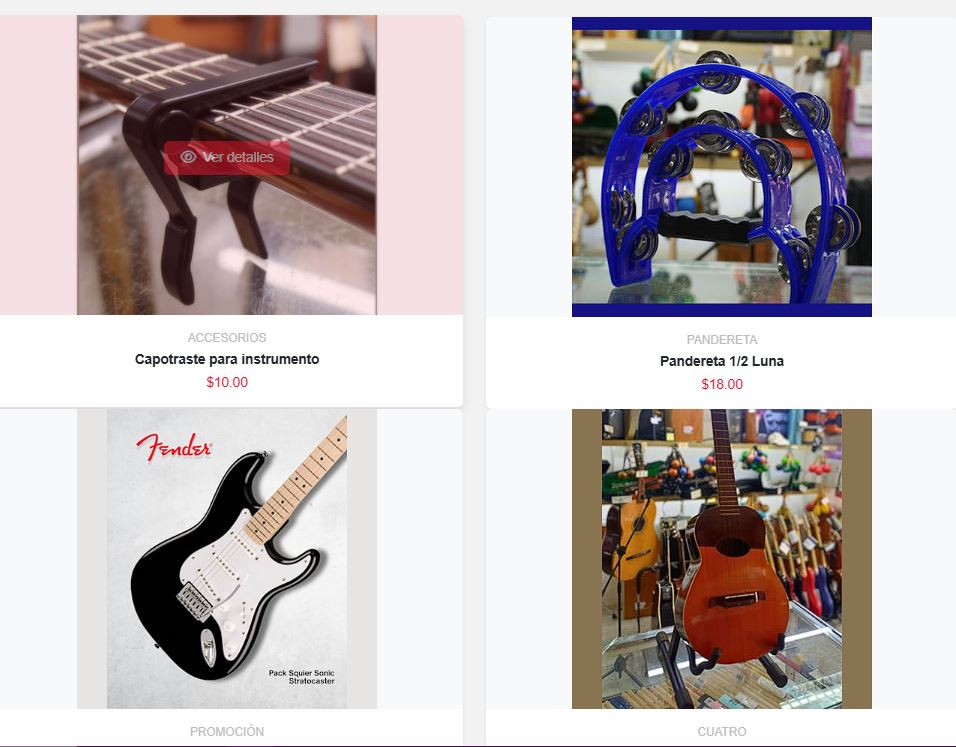
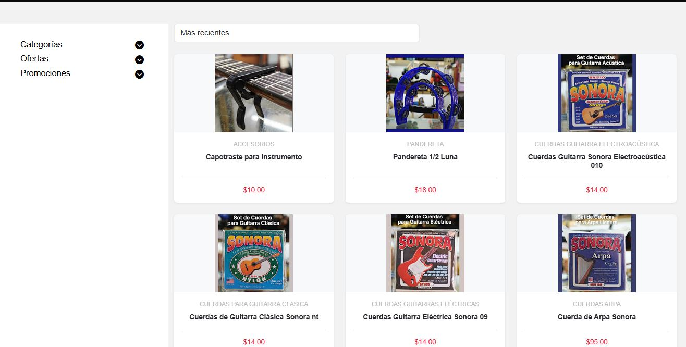
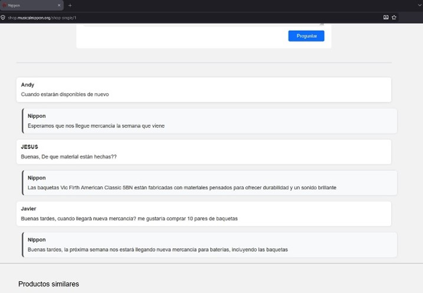
Ventas Web y Carrito de Compras
Flujo completo de comercio electrónico completamente integrado con el negocio. Los clientes pueden gestionar sus productos en el carrito y realizar todo el proceso de compra de manera fluida y segura.
Problema: El abandono de carritos era alto debido a procesos de checkout complicados y sin feedback.
Solución: Un flujo de compra optimizado en pocos pasos con validaciones en tiempo real.
Resultado: Aumento significativo en la tasa de finalización de compras y mejor experiencia de usuario.
- Carrito de compras dinámico y persistente
- Pasos de checkout optimizados para maximizar la conversión
- Integración directa con el módulo de Ventas del ERP
- Cálculo automático de subtotales y disponibilidad de stock
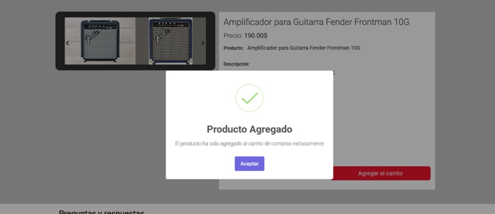
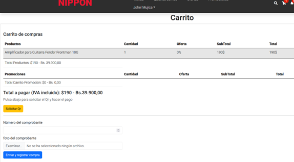
Mensajería Integrada en Compras
Un innovador canal de comunicación que se activa durante el proceso de compra. Permite conectar directamente al cliente en la web con el personal administrativo para resolver dudas sobre el pedido en tiempo real.
- Apertura automática de un canal de chat al iniciar una compra web
- Interfaz de mensajería fluida para el cliente en el portal web
- Respuesta y soporte directo por parte del empleado desde el sistema administrativo
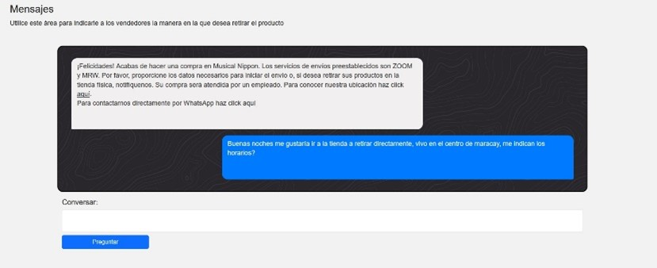
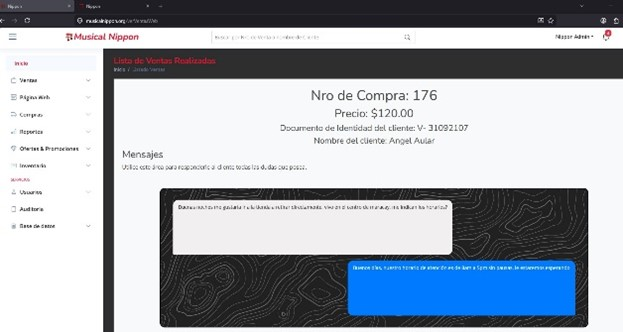
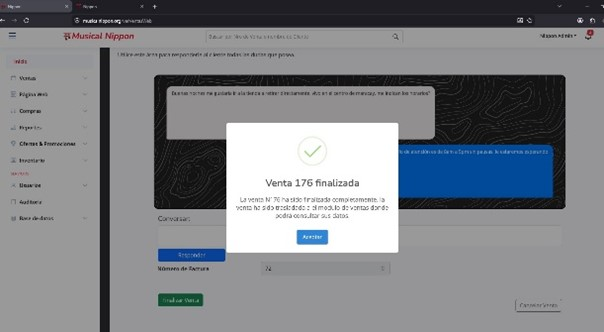
Favoritos y Notificaciones Inteligentes
Funcionalidad de retención de usuarios que les permite guardar productos de interés (Wishlist). El sistema monitoriza estos favoritos y envía alertas proactivas si cambian las condiciones de venta.
- Opción de agregar o quitar productos de la lista de favoritos personal
- Motor de notificaciones automáticas integrado
- Alerta inmediata al cliente cuando un producto favorito entra en oferta
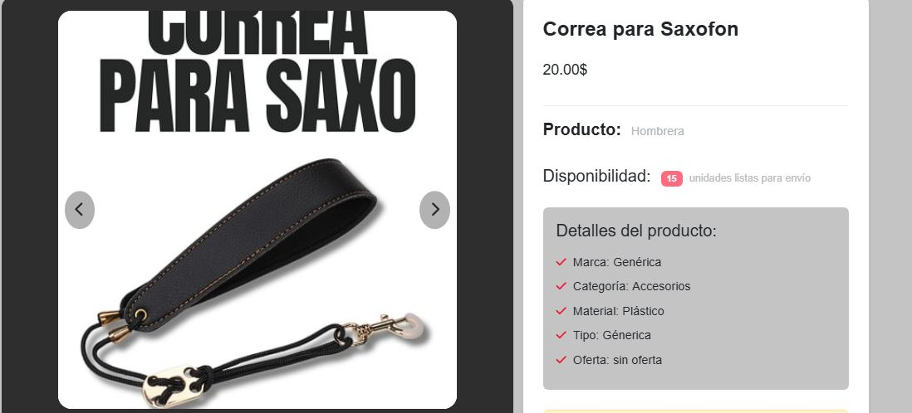
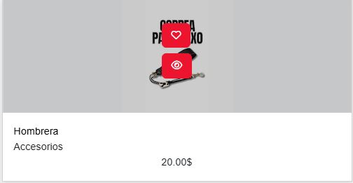
Seguridad y Bloqueo de Usuarios
Herramientas de moderación y seguridad web administradas desde el backend. Permite al negocio proteger la integridad de su plataforma web ante usuarios maliciosos o problemáticos.
- Funcionalidad de bloqueo manual de usuarios desde el sistema administrativo
- Restricción de acceso a compras o comentarios para usuarios bloqueados
- Protección activa de la plataforma contra spam en los posts y preguntas
- Integración transparente con el control de acceso global (RBAC)
root@web:~$ ./bin/security_monitor --watch
[INFO] Monitor started. Active policies: User Block, RBAC.
[INFO] Admin triggered manual block for User ID #4092.
[OK] Access revoked. Sessions for ID #4092 terminated.
[WARN] Blocked User ID #4092 attempted checkout (403 Forbidden).
[OK] System integrity maintained.
root@web:~$